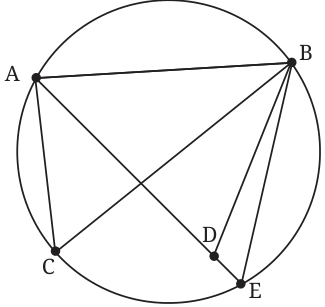
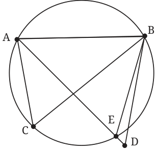
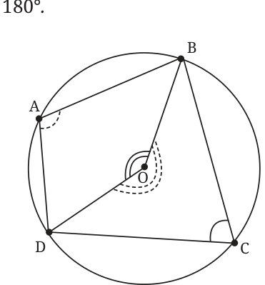
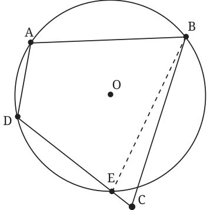
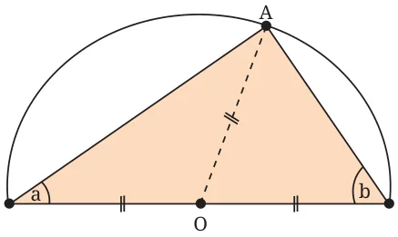
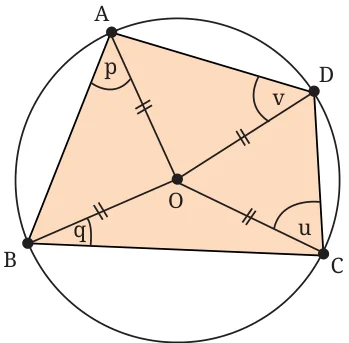

Now we address the question about when 4 points lie on the same circle. And we will let you explore the question for 5 points, 6 points and so on! We call points that are on the same circle concyclic. Theorem 10: If a line segment AB joining two points A, B subtends equal angles at two other points C, D that lie on the same side of AB, then the four points lie on a circle. As always we draw the picture first. Given: Consider segment AB. Points C and D lie on the same side of AB; points C and D are not on the line AB; and \(\angle ACB = \angle ADB\). To show: A, B, C, D lie on the same circle. Why is this true? The points A, B, C are noncollinear points. So, using Theorem 1, there is a circle passing through A, B, C. Let us show that D also lies on that circle. For this, let us draw the circle through A, B and C. Suppose D is not on the circle; then it is either inside or outside the circle. Join AD.


If D is outside the circle, then AD intersects the circle at E; see Fig. 5.27A. If D is inside the circle, extend AD to meet the circle at E; see Fig. 5.27B. Now C, E are on the same segment of the arc formed by chord AB. So, \(\angle ACB = \angle AEB\). If D were outside the circle, then \(\angle AEB\) is an exterior angle of the \(\triangle BED\), so \(\angle AEB > \angle ADB\). Also, \(\angle AEB = \angle ACB\) (angles in the same segment of a circle), and \(\angle ACB = \angle ADB\) (given). This leads to \(\angle ACB\) being greater than itself, which is obviously not possible. If D were inside as in Fig. 5.27B, then \(\angle ADB\) is an exterior angle of BED. In the same way that we argued above, we reach an impossible conclusion. So, we must eliminate both of these options (D being outside the circle and D being inside the circle). So, D must be on the circle passing through A, B, C. In other words, A, B, C, D are concyclic. When the vertices of a quadrilateral (which we also call a 4-gon) are concyclic, the quadrilateral is called a cyclic quadrilateral. We use this to show another nice property of circles! Theorem 11: The sum of two opposite angles of a cyclic quadrilateral is .

How shall we show that this is true? Consider arc BCD; point A is on the circle and it lies outside the arc BCD. So \(\angle BAD\) is half the angle that arc BCD subtends at the centre O. Since we move from OB to OD along C, this is the reflex angle BOD (dotted). So, \(\angle BAD = \frac{1}{2}\) (reflex angle BOD).
Similarly, \(\angle BCD\) is half the angle subtended by the arc BAD at O. This is the angle denoted by the double arc BOD. Since C is on arc BCD, we need to move from OB to OD via A. So, \(\angle BCD = \frac{1}{2}\) ( \(\angle\) BOD). So, \(\angle BAD + \angle BCD = \frac{1}{2}\) (complete angle at the centre O) A complete rotation at O is \(360 ^{\circ}\) . Hence, \(\angle BAD + \angle BCD = \frac{1}{2} \times (360 ^{\circ}\) ) \(= 180 ^{\circ}\) . So, the opposite angles of a cyclic 4-gon add up to \(180 ^{\circ}\) . The converse of this theorem also holds.
Exercise: A cyclic quadrilateral has angles measuring \(\angle A = 80 ^{\circ}\) , \(\angle B = 110 ^{\circ}\) , \(\angle C = 100 ^{\circ}\) , and \(\angle D = 70 ^{\circ}\) . Can such a quadrilateral be drawn? Explain why or why not. Theorem 12: If two opposite angles of a quadrilateral add up to \(180 ^{\circ}\) , then the vertices of the quadrilateral lie on a circle, i.e., they are concyclic.

Given: ABCD is a 4-gon (Fig. 5.29). \(\angle BAD + \angle BCD = 180 ^{\circ}\) . \(\angle ABC + \angle CDA =180 ^{\circ}\) . To show that: ABCD is cyclic. Why is this true? Suppose ABCD is not cyclic. Since A, D, B are not collinear, there is a circle passing through the three points. If that circle does not pass through C, there are two cases: C is outside or C is inside the circle.
We deal only with the first case and leave the other to the reader. Let E be the point where CD meets the circle (see Fig. 5.29). Then ABED is a cyclic 4-gon. So from Theorem 11, \(\angle BAD + \angle BED = 180 ^{\circ}\) . We are also given \(\angle BAD + \angle DCB = 180 ^{\circ}\) . So \(\angle BCD = \angle BED\). But this is not possible as \(\angle BED\) is the exterior angle of BEC and hence greater than \(\angle BCE\), i.e., greater than \(\angle BCD\). So, points A, B, C, D all lie on a circle.
The circle is a beautiful and tantalising shape. After mastering these basic properties, you will get a feel for the symmetries of a circle and the properties of chords, the angles they subtend, the distances of chords from the centre, and angles subtended by arcs at the centre. Next year you will study many more interesting and beautiful such results about circles. Stay tuned - the best is yet to come!
- 1.In a circle, a chord is 5 cm away from the centre. If the radius of
the circle is 13 cm, what is the length of the chord?
- 2.An arc of a circle subtends an angle of \(70 ^{\circ}\) at the centre. What is
the measure of the angle subtended by the arc at a point on the circle?
- 3.The diameter of a circle is 26 cm. A chord of length 24 cm is
drawn in the circle. Find the distance from the centre of the circle to the chord.
- 4.A circle has a radius of 15 cm. A chord is drawn. The distance
from the centre of the circle to the chord is 9 cm. What is the length of the chord?
- 5.Prove that the perpendicular bisector of a chord passes through
the centre of the circle.
- 6.The diameter of a circle is AB. Point C is on the circumference.
What is the measure of the \(\angle ACB\)? Explain your reasoning.
- 7.ABCD is a cyclic quadrilateral inscribed in a circle. If \(\angle A\)
measures \(75 ^{\circ}\) , what is the measure of \(\angle C\)? If \(\angle B\) measures \(110 ^{\circ}\) , what is the measure of \(\angle D\)?
- 8.Quadrilateral PQRS is inscribed in a circle. If \(\angle P = (2x + 10) ^{\circ}\)
and \(\angle R = (3x - 20) ^{\circ}\) , find the value of x and the measures of \(\angle P\) and \(\angle R\).
- 9.The distance of a chord of length 16 cm from the centre of a
circle is 6 cm. Find the radius of the circle.
- 10.A cyclic quadrilateral has sides 5, 5, 12, 12 units. Find its area.
*11. Consider a cyclic quadrilateral. Without drawing its circumcircle, how can we find out whether the centre of the circumcircle lies
inside the quadrilateral or outside? What is the best way of finding out?
*12. When two chords intersect, each of them is divided into two line segments. Show that if the intersecting chords are of equal length, then the line segments of one chord are equal to the corresponding line segments of the other chord.
*13. Draw a circle in which a chord of 6 cm length stands at a distance of 3 cm from the centre. (Hint: Is it a circumcircle of a suitable triangle?)
*14. Show that rectangle is the only parallelogram that can be inscribed in a circle.
*15. Show that if a rectangle is inscribed in a circle, then the point of intersection of its diagonals must lie at the centre of the circle. *16. Consider all chords of a circle of a fixed length. What is the shape formed by the midpoints of all these chords? *17. In a circle with centre O, chords AB and AC are congruent. Explain why this statement is true: “The centre of the circle lies on the angle bisector of \(\angle\) BAC”.
- 18.Two parallel chords of lengths 10 cm and 24 cm are on the same
side of the centre of a circle. The distance between the chords is 7 cm. Find the radius of the circle. *19. A regular hexagon is inscribed in a circle of radius r. Find the length of the sides of the hexagon and the distance of each side from the centre of the circle.
- 20.A quadrilateral MNOP is inscribed in a circle. If MN is a
diameter, what can you say about \(\angle MOP\) and \(\angle MNP\)? Explain your reasoning.
- 21.Let ABCD be a cyclic quadrilateral. Explain why the exterior
angle at any vertex is equal to the interior opposite angle (e.g., \(\angle CDE = \angle ABC\), where E is a point on the extension of side CD). *22. “There is no chord of a circle that is longer than its diameter.” How do you justify this statement? *23. Let A be any point within a given circle with centre O. Show that the shortest chord of the circle that passes through point A is the one that is perpendicular to OA.
- 24.How would you use the following figure to justify the statement
that the angle in a semicircle is \(90 ^{\circ}\) ?

*25. In a circle, two chords CC' and DD' are drawn perpendicular to a diameter AB. Prove that the segment MM' joining the midpoints of the chords CD and C' D' is perpendicular to AB. *26. How would you use the following figure to justify the statement that the sum of the opposite angles of a cyclic quadrilateral is \(180 ^{\circ}\) ?

Chapter Summary
- •A circle is the set of all points in a plane that lie at a given
distance (the radius) from a fixed point called its centre.
- •A circle has reflection symmetry across any diameter.
- •A circle has rotational symmetry about its centre, through any
angle.
- •Infinitely many circles can be drawn through two given points.
The centres of these circles lie on the perpendicular bisector of the line segment joining the two given points.
- •Given any three points not on a straight line, a unique circle
can be drawn through them; it is called the circumcircle of the triangle whose vertices are the three given points. The centre of this circle is called the circumcentre of the three points, lies at the intersection of the perpendicular bisectors of the line segments joining the points.
- •Equal chords subtend equal angles at the centre of the circle.
Conversely, if two chords subtend equal angles at the centre, the chords are equal in length.
- •A line drawn from the centre to the midpoint of a chord is
perpendicular to that chord. Conversely, a perpendicular from the centre to a chord bisects it.
- •Chords of equal length lie at equal distance from the centre.
Conversely, chords that lie at the same distance from the centre are equal in length.
- •Given two unequal chords, the longer chord is closer to the
centre.
- •The angle subtended by an arc at the centre of a circle is twice
the angle it subtends at any point on the remaining part of the circle.
- •The angle subtended by a diameter at any point on the circle
is \(90 ^{\circ}\) .
- •If a line segment between two points subtends equal angles at
two other points on the same side of the segment, all four points lie on a single circle (i.e., the points are concyclic).
- •A quadrilateral inscribed in a circle is called cyclic. In a cyclic
quadrilateral, the sum of opposite pairs of angles is \(180 ^{\circ}\) . Conversely, if two opposite angles of a quadrilateral add up to \(180 ^{\circ}\) , then it is a cyclic quadrilateral.